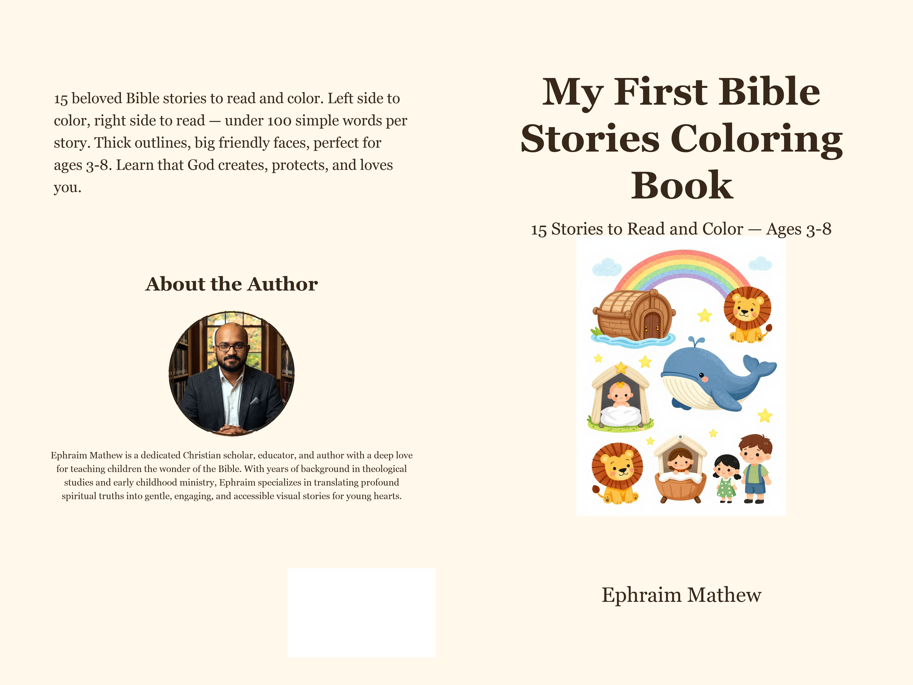

Ages 3–8 · 8.5×8.5 · 32 pages · ISBN 9798175744331
My First Bible Stories Coloring Book — Read, Color, and Remember God Loves You!
15 Stories to Read and Color — Ages 3-8 — 30p — Ephraim Mathew
by Ephraim Mathew · Effrix Books · Published Sep 20, 2026 · 6×9 (title lists 8.5×8.5 square)
15 beloved stories — Creation, Noah's Ark, Baby Moses, David & Goliath, Daniel & Lions, Jonah & Big Fish, Joseph's Coat, Birth of Jesus, Jesus Calms Storm, Feeds 5,000, Good Samaritan, Lost Sheep, Palm Sunday, Empty Tomb, John 3:16 — Bible reference on each. Left page thick chibi coloring scene, right page <100-word Grade-1 story centered bold, moral bolded “God loves you…”. Inspiration guide inside.
Trim / Pages
6″×9″ (8.5″×8.5″ on cover) · 32 pp
Paper / Cover
White · Matte · B&W


Buy on Amazon
ASIN B0HKMWWLCH · ISBN 9798175744331